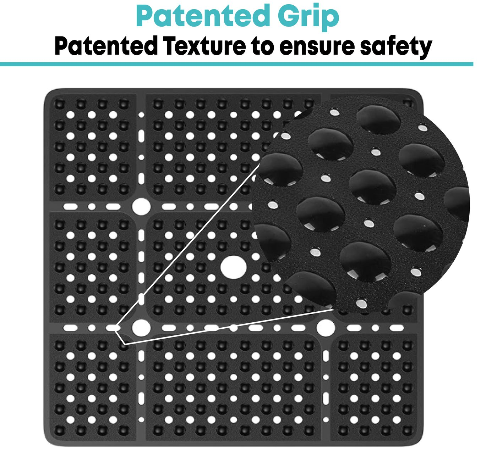
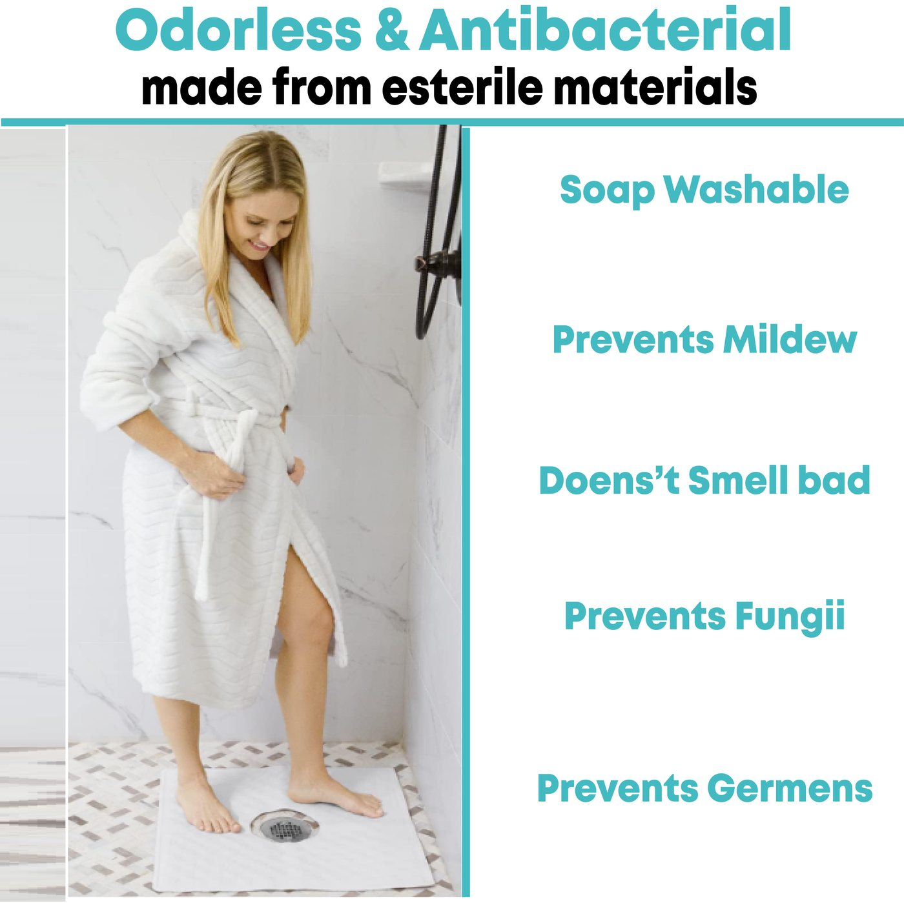
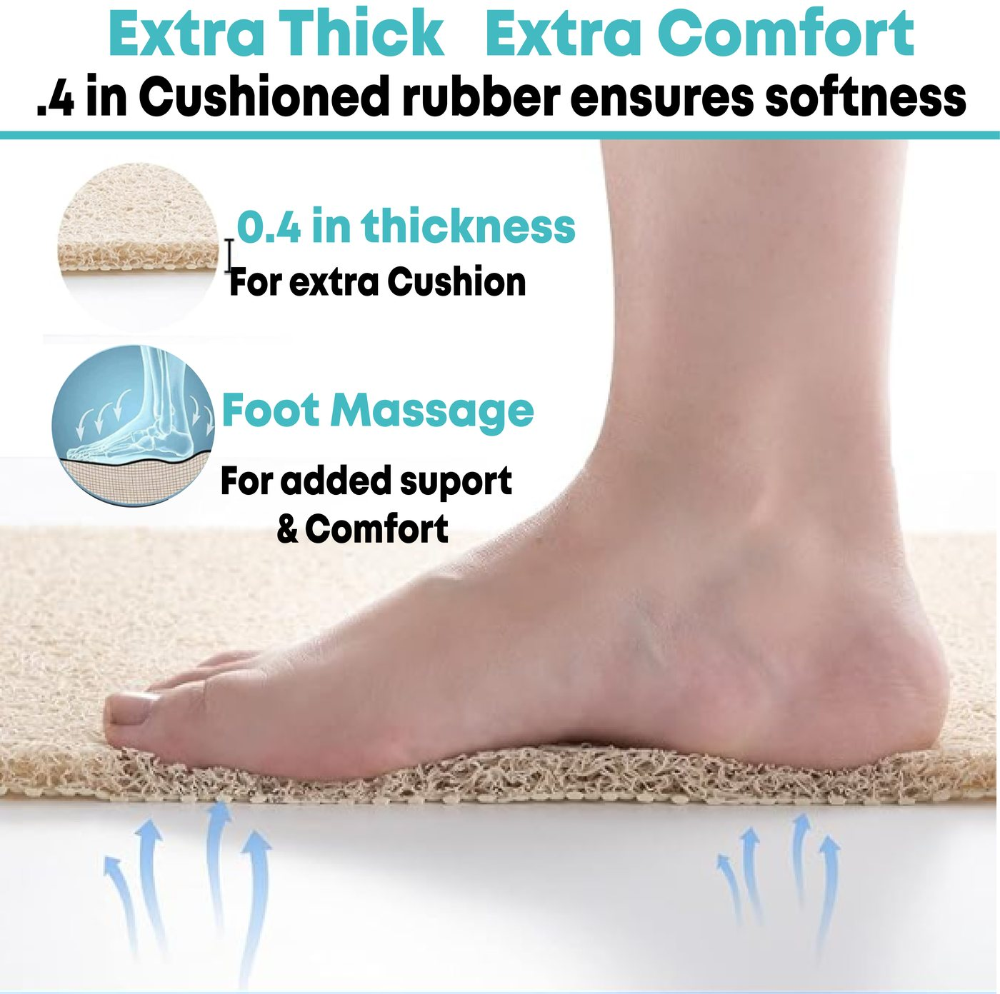
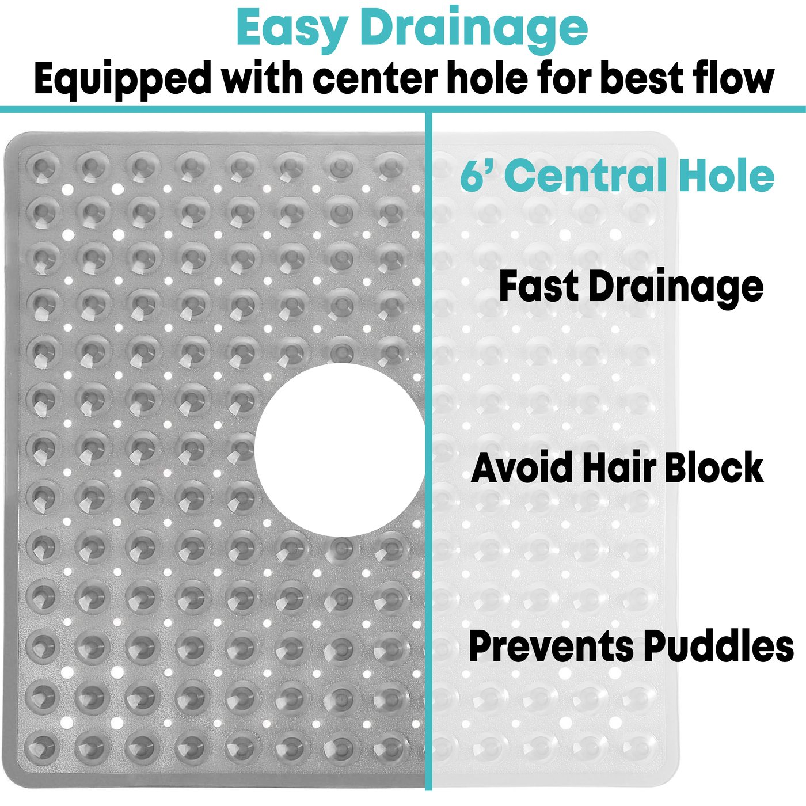

19.69% within the positive sentiment table; a reason to make dimensions and fit visually explicit.
Shulex VOC AI · Review intelligence · Creative direction
Customer language became a visual system.
This project used Shulex VOC AI to structure recurring customer motivations, objections, expectations and usage contexts for a shower-mat category. The output was not “AI-generated design.” It was a sharper human brief: evidence from customer language guided what each marketplace image needed to explain.
Portfolio disclosure: this case uses archived, aggregate theme tables and historical creative deliverables. Counts describe coded mentions, not unique customers. The available files do not document the collection window, deduplication method or a causal conversion test.
01 · Voice of customer
Find the decision tension.
The strongest creative opportunities were not isolated compliments. They were tensions: shoppers praised safety, size and comfort while other reviewers reported weak suction, slipperiness, odor and drainage issues. Those opposites revealed the questions the gallery had to answer.
33.96% within the negative sentiment table; the highest-frequency negative theme.
18.16% within the positive table, contrasted with 20 difficult-to-clean mentions in the negative table.
16.11% within the positive table; a cue to show underfoot softness instead of only product specifications.
20.61% within the negative table; a high-severity objection that requires product proof, not decorative reassurance.
11.01% within the negative table; Useful for prioritizing investigation and substantiation before making a claim.
Source: archived Shulex-exported CSV tables for sentiment, rating optimization, buyer motivation, expectations and usage scenarios. Theme labels can overlap; Percentages are reported within their source tables and should not be combined into a market-share estimate.
02 · Workflow
AI organized the evidence. Strategy gave it a job.
Shulex accelerated review mining, but the value came from interpretation: separating frequency from severity, turning themes into shopper questions and assigning one communication task to each image.
Structure
Cluster review language into motivations, positive and negative sentiment, expectations and real-use scenarios.
Prioritize
Compare recurring praise with objections to identify decision tensions instead of chasing every keyword.
Translate
Convert each tension into an image job: prove grip, clarify fit, explain drainage or make comfort visible.
Produces
Build marketplace compositions in Photoshop and Illustrator with product close-ups, scale cues and benefit hierarchy.
Validate yourself
Check dimensions, materials and performance language against product documentation before publication.
03 · Insight-to-image map
Every frame answers a shopper question.
The gallery was organized around a decision sequence: establish security, show the mechanism, clarify fit and drainage, then reinforce comfort and maintenance.
VOC signalsShopper questionCreative response
Weak suction / does not stickWill it stay in place on my surface?Show the underside, suction-cup count and a close detail of the contact mechanism.
Slippery / dangerousWhat creates traction when the mat is wet?Use a macro crop of the raised texture and connect it visually to the full product.
Perfect size / larger sizeWill it cover my shower footprint?Place dimensions directly on a real bathroom composition instead of burying them in copy.
Poor drainage / easy to cleanWill water and residue collect underneath?Make the central drain opening and perforation pattern visible; pair claims with verified care instructions.
Comfort/hard on feetHow will it feel during daily use?Show thickness and underfoot context so softness is understandable before purchase.
04 Creative output
Research translated into media.
These historical assets show the resulting communication system. They are presented as project artifacts: the portfolio case explains the strategic connection between the VOC evidence and each visual choice.






05 · Responsible use
VOC finds the question. It does not provide the answer.
Review frequency is not product validation
A repeated phrase such as “bad smell” tells the team what to investigate. It does not substantiate antibacterial, mildew-resistant or odor-free performance.
Claims need a second evidence layer
Patent status, material composition, exact suction-cup count, dimensions and safety language should be checked against current specifications, legal guidance and testing before an asset is reused.
Creative performance needs measurement
The archive contains research and finished media, but not controlled before/after conversion test. The defensible outcome is a stronger, evidence-led content architecture—not a causal sales claim.
The capability
Data analysis and creative production in one workflow.
The project demonstrates a repeatable way to use Shulex VOC AI: not as a shortcut for generic copy, but as a research layer that tells designers which shopper uncertainty deserves space. The result is a gallery in which each image has a reason to exist.